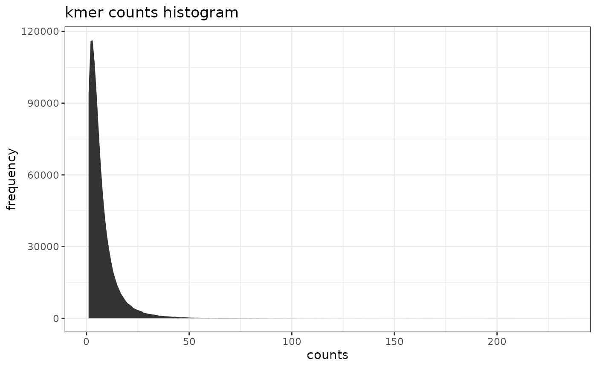

metabinR
Anestis Gkanogiannis
anestis@gkanogiannis.com Source:vignettes/metabinR_vignette.Rmd
metabinR_vignette.RmdAbout metabinR
metabinR performs abundance- and composition-based
binning on metagenomic samples directly from FASTA or FASTQ files.
Abundance-based binning (AB) analyzes long k-mers (k > 8);
composition-based binning (CB) analyzes short k-mers (k < 8);
hierarchical binning (ABxCB) chains the two.
The heavy lifting is implemented in Java and called via rJava. From v2.0.0
the R API returns an S4 MetabinResult object and accepts
Biostrings / ShortRead inputs in addition to file paths.
Installation
if (!requireNamespace("BiocManager", quietly = TRUE))
install.packages("BiocManager")
BiocManager::install("metabinR")A JDK (Java >= 11) must be available before installing
metabinR.
Preparation
JVM heap size
JVM flags are passed through the java.parameters option.
The -Xmx flag controls the maximum heap:
-Xmx1500M or -Xmx3G, etc. Set this
before loading the package.
To customise additional JVM flags (on top of the -Xmx
heap setting), set
options(metabinR.jvm.flags = c("-XX:+UseG1GC", ...)) before
the package is loaded. The defaults returned by
metabinR_jvm_options() already enable G1GC and string
deduplication.
The MetabinResult class
Each binning function returns a MetabinResult S4
object:
-
assignments(res)—DataFrameof per-read cluster assignments. -
nClusters(res)— number of clusters produced. -
parameters(res)— list of parameters actually used. -
algorithm(res)—"AB","CB", or"ABxCB". -
as.data.frame(res)— the v1.x tabular layout for back-compat.
The read_id column identifies each read. The column
named by algorithm(res) contains its assigned bin, and
columns such as AB.1 contain distances to candidate bins.
Bin numbers are arbitrary labels; they do not identify genomes or
abundance classes on their own.
Abundance based binning example
The toy simulated metagenome contains 26,664 Illumina reads (13,332 pairs of 2x150bp) sampled from 10 bacterial genomes across two abundance classes (high vs. low).
Abundance ground truth:
abundances <- read.table(
system.file("extdata", "distribution_0.txt", package = "metabinR"),
col.names = c("genome_id", "abundance", "AB_id"))Read-level ground truth contains the genome of origin for each read. Add the abundance class of each genome for the AB evaluation:
reads.mapping <- read.delim(system.file(
"extdata", "reads_mapping.tsv.gz", package = "metabinR"))
reads.mapping <- merge(reads.mapping,
abundances[, c("genome_id", "AB_id")],
by = "genome_id")Run abundance-based binning with 10-mers into 2 clusters:
res.AB <- abundance_based_binning(
system.file("extdata", "reads.metagenome.fasta.gz", package = "metabinR"),
numOfClustersAB = 2,
kMerSizeAB = 10,
dryRun = FALSE,
outputAB = "vignette"
)
res.AB
#> MetabinResult (AB)
#> reads: 26,664
#> clusters: 2
#> inputs: 1 file(s)
#> - /home/runner/work/_temp/Library/metabinR/extdata/reads.metagenome.fasta.gzInspect the assignments and summarize the observed bins. The distance summaries use only each read’s distance to its assigned bin:
head(as.data.frame(assignments(res.AB)))
#> read_id AB AB.1 AB.2
#> 1 S0R0/1 1 0.032307751 0.004981781
#> 2 S0R0/2 1 0.030796454 0.005614620
#> 3 S0R1/1 1 0.021667648 0.009437209
#> 4 S0R1/2 1 0.019364505 0.010336333
#> 5 S0R2/1 1 0.013742806 0.012755650
#> 6 S0R2/2 2 0.009775655 0.014416852
knitr::kable(as.data.frame(bin_summary(res.AB)), digits = 3)| bin | n_reads | proportion | mean_distance | median_distance |
|---|---|---|---|---|
| 1 | 19761 | 0.741 | 0.024 | 0.024 |
| 2 | 6903 | 0.259 | 0.015 | 0.015 |
abundance_based_binning() wrote one FASTA per cluster
and a k-mer count histogram:
histogram.AB <- read.table("vignette__AB.histogram.tsv", header = TRUE)
ggplot(histogram.AB, aes(x = counts, y = frequency)) +
geom_area() +
labs(title = "kmer counts histogram") +
theme_bw()
Evaluate against the abundance-class ground truth.
evaluate_bins() matches read_id to
anonymous_read_id, so the two tables need not have the same
row order. The confusion table has inferred bins as rows and known
abundance classes as columns:
eval.AB <- evaluate_bins(res.AB, reads.mapping,
id = "anonymous_read_id", label = "AB_id")
eval.AB$confusion
#> origin
#> bin 1 2
#> 1 18185 1576
#> 2 1891 5012
knitr::kable(as.data.frame(eval.AB$per_bin), digits = 3)| bin | n_reads | dominant_origin | dominant_reads | purity |
|---|---|---|---|---|
| 1 | 19761 | 1 | 18185 | 0.920 |
| 2 | 6903 | 2 | 5012 | 0.726 |
knitr::kable(as.data.frame(eval.AB$overall), digits = 3)| n_reads | n_bins | n_origins | weighted_purity | weighted_recovery | adjusted_rand_index |
|---|---|---|---|---|---|
| 26664 | 2 | 2 | 0.87 | 0.87 | 0.519 |
Per-bin purity is the fraction of reads in a bin from its dominant abundance class. The adjusted Rand index (ARI) compares the two partitions without assuming that their labels correspond.
Composition based binning example
Here the known label is the bacterial genome of origin, rather than the abundance class used above.
Run composition-based binning with 4-mers into 10 clusters:
res.CB <- composition_based_binning(
system.file("extdata", "reads.metagenome.fasta.gz", package = "metabinR"),
numOfClustersCB = 10,
kMerSizeCB = 4,
dryRun = TRUE,
outputCB = "vignette"
)Check bin sizes and inspect reads with close competing distances. The
margin is an absolute distance difference on this
algorithm’s scale, not a probability. A small result can mean either
that few reads are close to a boundary or that the chosen margin is too
narrow:
knitr::kable(as.data.frame(bin_summary(res.CB)), digits = 3)| bin | n_reads | proportion | mean_distance | median_distance |
|---|---|---|---|---|
| 7 | 5687 | 0.213 | 15463.45 | 15354 |
| 10 | 1450 | 0.054 | 16622.33 | 16688 |
| 6 | 1036 | 0.039 | 15260.93 | 15099 |
| 3 | 7571 | 0.284 | 16480.01 | 16472 |
| 5 | 2855 | 0.107 | 15620.85 | 15452 |
| 1 | 1708 | 0.064 | 16207.55 | 16081 |
| 9 | 3974 | 0.149 | 15891.34 | 15757 |
| 4 | 1215 | 0.046 | 15094.21 | 14892 |
| 8 | 539 | 0.020 | 16352.11 | 16174 |
| 2 | 629 | 0.024 | 16610.71 | 16412 |
close.reads <- ambiguous_reads(res.CB, margin = 0.05)
nrow(close.reads)
#> [1] 15
knitr::kable(head(as.data.frame(close.reads)), digits = 3)| read_id | bin | best_distance | second_distance | distance_margin |
|---|---|---|---|---|
| S0R774/2 | 5 | 15726 | 15726 | 0 |
| S0R2707/2 | 4 | 16176 | 16176 | 0 |
| S0R3591/1 | 5 | 15214 | 15214 | 0 |
| S0R5272/1 | 5 | 15904 | 15904 | 0 |
| S0R5811/2 | 6 | 17310 | 17310 | 0 |
| S0R7348/1 | 1 | 16936 | 16936 | 0 |
Evaluate by genome of origin. Best-bin recovery is the fraction of an origin’s reads found in its single largest bin; it is not genome completeness. Weighted purity and recovery summarize these counts over all evaluated reads:
eval.CB <- evaluate_bins(res.CB, reads.mapping,
id = "anonymous_read_id", label = "genome_id")
knitr::kable(as.data.frame(eval.CB$per_origin), digits = 3)| origin | n_reads | dominant_bin | recovered_reads | best_bin_recovery |
|---|---|---|---|---|
| Genome15.0 | 14190 | 7 | 5136 | 0.362 |
| Genome3.0 | 5886 | 9 | 1565 | 0.266 |
| Genome2.0 | 538 | 3 | 219 | 0.407 |
| Genome12.0 | 3782 | 3 | 3677 | 0.972 |
| Genome11.0 | 1186 | 3 | 1152 | 0.971 |
| Genome6.0 | 356 | 2 | 57 | 0.160 |
| Genome17.0 | 594 | 1 | 233 | 0.392 |
| Genome22.0 | 8 | 3 | 6 | 0.750 |
| Genome23.0 | 80 | 3 | 80 | 1.000 |
| Genome4.0 | 44 | 2 | 14 | 0.318 |
knitr::kable(as.data.frame(eval.CB$overall), digits = 3)| n_reads | n_bins | n_origins | weighted_purity | weighted_recovery | adjusted_rand_index |
|---|---|---|---|---|---|
| 26664 | 10 | 10 | 0.615 | 0.455 | 0.12 |
Hierarchical (2-step ABxCB) binning example
res.ABxCB <- hierarchical_binning(
system.file("extdata", "reads.metagenome.fasta.gz", package = "metabinR"),
numOfClustersAB = 2,
kMerSizeAB = 10,
kMerSizeCB = 4,
dryRun = TRUE,
outputC = "vignette"
)
knitr::kable(as.data.frame(bin_summary(res.ABxCB)), digits = 3)| bin | n_reads | proportion | mean_distance | median_distance |
|---|---|---|---|---|
| 1 | 19761 | 0.741 | 16731.08 | 16490 |
| 2 | 6903 | 0.259 | 16773.47 | 16304 |
eval.ABxCB <- evaluate_bins(res.ABxCB, reads.mapping,
id = "anonymous_read_id", label = "genome_id")
knitr::kable(as.data.frame(eval.ABxCB$overall), digits = 3)| n_reads | n_bins | n_origins | weighted_purity | weighted_recovery | adjusted_rand_index |
|---|---|---|---|---|---|
| 26664 | 2 | 10 | 0.62 | 0.904 | 0.298 |
In hierarchical results, distances for bins outside a read’s parent
abundance bin are missing. ambiguous_reads() ignores those
missing distances and omits reads with fewer than two finite
candidates.
In-memory inputs (Biostrings / ShortRead)
Instead of a path, you can pass a DNAStringSet,
QualityScaledDNAStringSet, or ShortReadQ. The
Java backend reads from disk, so non-file inputs are staged to a
tempfile transparently.
reads <- Biostrings::readDNAStringSet(
system.file("extdata", "reads.metagenome.fasta.gz", package = "metabinR"))
res.AB.mem <- abundance_based_binning(
reads,
numOfClustersAB = 2,
kMerSizeAB = 10,
dryRun = TRUE
)
identical(nrow(assignments(res.AB.mem)), nrow(assignments(res.AB)))
#> [1] TRUEClean up files written by the AB run:
unlink("vignette__*")Session Info
utils::sessionInfo()
#> R version 4.6.1 (2026-06-24)
#> Platform: x86_64-pc-linux-gnu
#> Running under: Ubuntu 24.04.5 LTS
#>
#> Matrix products: default
#> BLAS: /usr/lib/x86_64-linux-gnu/openblas-pthread/libblas.so.3
#> LAPACK: /usr/lib/x86_64-linux-gnu/openblas-pthread/libopenblasp-r0.3.26.so; LAPACK version 3.12.0
#>
#> locale:
#> [1] LC_CTYPE=C.UTF-8 LC_NUMERIC=C
#> [3] LC_TIME=C.UTF-8 LC_COLLATE=C.UTF-8
#> [5] LC_MONETARY=C.UTF-8 LC_MESSAGES=C.UTF-8
#> [7] LC_PAPER=C.UTF-8 LC_NAME=C.UTF-8
#> [9] LC_ADDRESS=C.UTF-8 LC_TELEPHONE=C.UTF-8
#> [11] LC_MEASUREMENT=C.UTF-8 LC_IDENTIFICATION=C.UTF-8
#>
#> time zone: UTC
#> tzcode source: system (glibc)
#>
#> attached base packages:
#> [1] stats4 stats graphics grDevices utils datasets methods
#> [8] base
#>
#> other attached packages:
#> [1] Biostrings_2.80.2 Seqinfo_1.2.0 XVector_0.52.0
#> [4] IRanges_2.46.0 S4Vectors_0.50.3 BiocGenerics_0.58.1
#> [7] generics_0.1.4 ggplot2_4.0.3 metabinR_2.1.1
#> [10] BiocStyle_2.40.0
#>
#> loaded via a namespace (and not attached):
#> [1] SummarizedExperiment_1.42.0 gtable_0.3.6
#> [3] xfun_0.61 bslib_0.12.0
#> [5] hwriter_1.3.2.1 latticeExtra_0.6-31
#> [7] rJava_1.0-18 Biobase_2.72.0
#> [9] lattice_0.22-9 vctrs_0.7.3
#> [11] tools_4.6.1 bitops_1.1-0
#> [13] parallel_4.6.1 tibble_3.3.1
#> [15] pkgconfig_2.0.3 Matrix_1.7-5
#> [17] checkmate_2.3.4 RColorBrewer_1.1-3
#> [19] S7_0.2.2 desc_1.4.3
#> [21] cigarillo_1.2.1 lifecycle_1.0.5
#> [23] farver_2.1.2 compiler_4.6.1
#> [25] deldir_2.0-4 Rsamtools_2.28.0
#> [27] textshaping_1.0.5 codetools_0.2-20
#> [29] htmltools_0.5.9 sass_0.4.10
#> [31] yaml_2.3.12 pillar_1.11.1
#> [33] pkgdown_2.2.1 crayon_1.5.3
#> [35] jquerylib_0.1.4 BiocParallel_1.46.0
#> [37] DelayedArray_0.38.2 cachem_1.1.0
#> [39] ShortRead_1.70.0 abind_1.4-8
#> [41] tidyselect_1.2.1 digest_0.6.39
#> [43] dplyr_1.2.1 bookdown_0.48
#> [45] labeling_0.4.3 fastmap_1.2.0
#> [47] grid_4.6.1 cli_3.6.6
#> [49] SparseArray_1.12.3 magrittr_2.0.5
#> [51] S4Arrays_1.12.1 withr_3.0.3
#> [53] scales_1.4.0 backports_1.5.1
#> [55] rmarkdown_2.32 pwalign_1.8.0
#> [57] matrixStats_1.5.0 jpeg_0.1-11
#> [59] interp_1.1-6 otel_0.2.0
#> [61] ragg_1.5.2 png_0.1-9
#> [63] evaluate_1.0.5 knitr_1.52
#> [65] GenomicRanges_1.64.0 rlang_1.3.0
#> [67] Rcpp_1.1.2 glue_1.8.1
#> [69] BiocManager_1.30.27 jsonlite_2.0.0
#> [71] R6_2.6.1 MatrixGenerics_1.24.0
#> [73] GenomicAlignments_1.48.0 systemfonts_1.3.2
#> [75] fs_2.1.0